A program is free software if the program's users have the four essential freedoms: [1]
Host tietokone
Microsoft Surface Laptop Studio 14,4" -kannettava, Win 11 Pro
Käynnistettäessä Vmwarea, se pyysi päivittämään itsensä versioon 17.0.0. painoin nappia skip this version. Tämän jäkeen kävin tarkastamassa oman Vmwareni version, se on 16.2.5 build-20904516. Vmwaressa oli valmiina aikaisemmin luomani ubunto 64-bittinen virtuaalikone. Kuitenkin tehtävässä neuvottiin tekemään uusi kone kokonaan ja dokumentoimaan sen luonti.
Tässä vaiheessa perehdyin lisää kurssimateriaaliin ja päätin, että teen kuten on ohjeistettu ja asennan Virtualboxin ja Debianin 😊
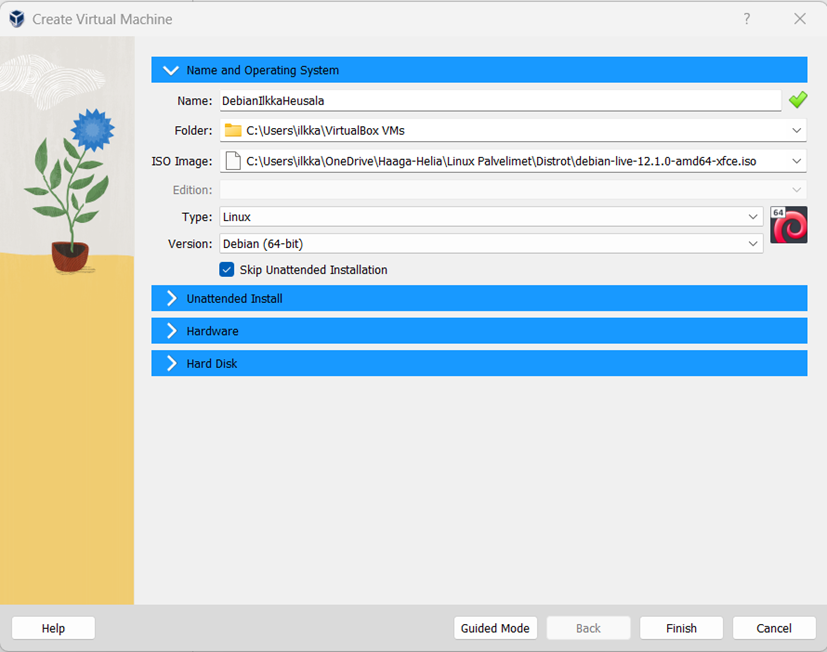Laitoin asetukset ohjeiden mukaan keskusmuisti 4GB ja kovalevy 60GB, ei pre-allocated, laitoin koneelle vain 1 CPU:n koska kannettavassani ei ole kuin neljä ydintä, toki HT:n avulla on madollista käyttää kahdeksaa. Ohjeissa neuvottiin asettamaan ISO tiedosto virtualliseen CDROM asemaan, tein ISO tiedoston liittämisen kuitenkin jo virtuaalikoneen luonti vaiheessa.
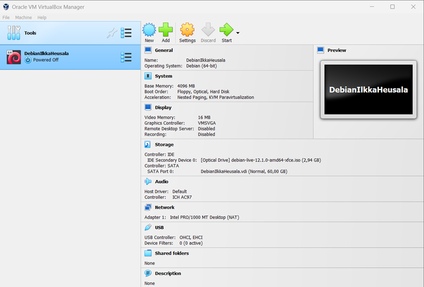Valmis käynnistämätön kone näyttää tältä.
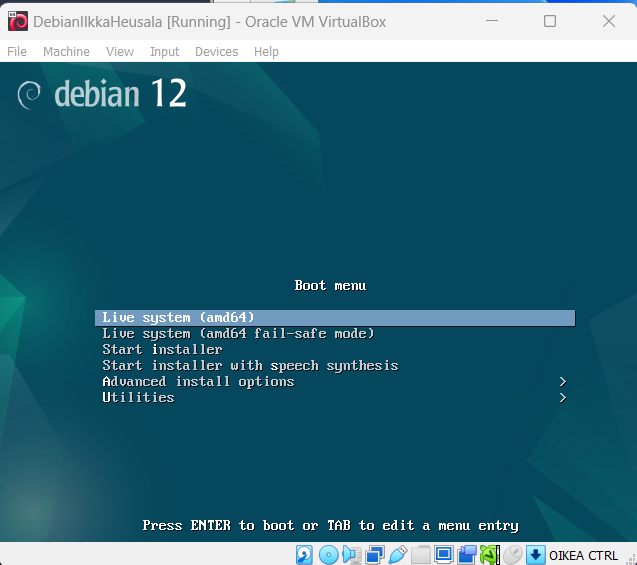
Käynnistin koneen ja se on valmiina testiä varten boottaamaan liveen.
Mouse integration tuotti ongelmia, koska se oli defaulttina oikea CTRL, jota ei näppäimistöstäni löytynyt. Sammutin virtuaalikoneen ja vaihdoin näppäimeksi pelkkä CTRL. Käynnistin koneen uudestaan, mutta nyt ISO tiedosto oli kadonnut ja boottimediaa ei ollut koneessa. Mounttasin sen uudestaan ja boottasin liveen takasin.
Ihmettelin mitä tämä tarkoittaa, mutta jatkoin eteenpäin.
Avasin nettiselaimen ja kokeilin Googlata, kaikki toimi niin kuin pitikin.
Yhteenveto asennuksesta
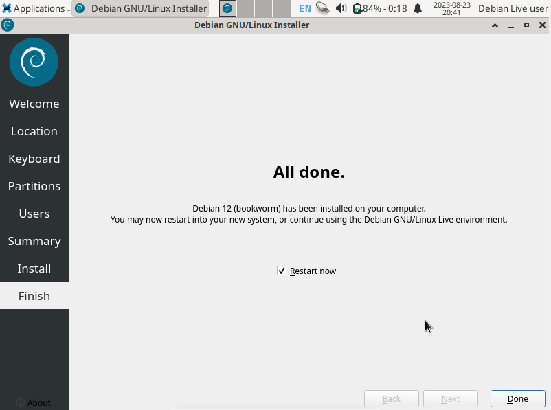Debian asentui noin kymmenessä minuutissa ja käynnistin koneen uudelleen.
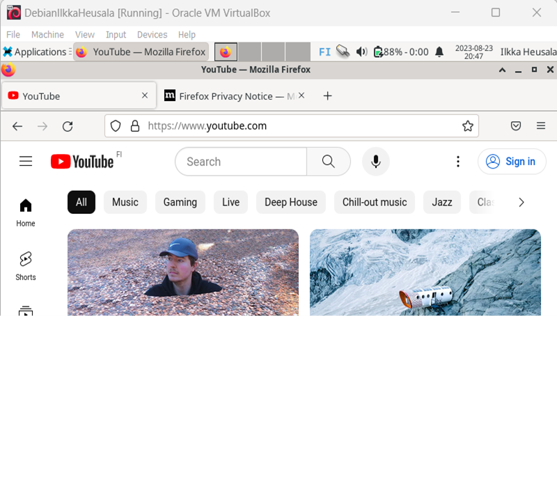Avasin nettiselaimen ja menin YouTubeen, kaikki vaikutti toimivan.
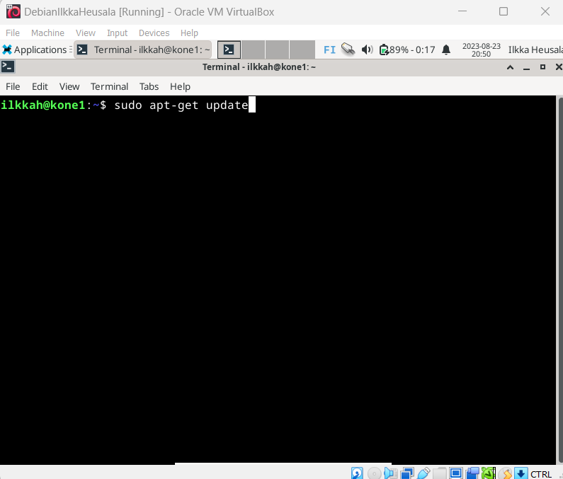Oli päivittämisen aika, laitoin kuvan komennon sisään ja paketinhallintaan päivittyi tiedot mitä on päivitettävissä.
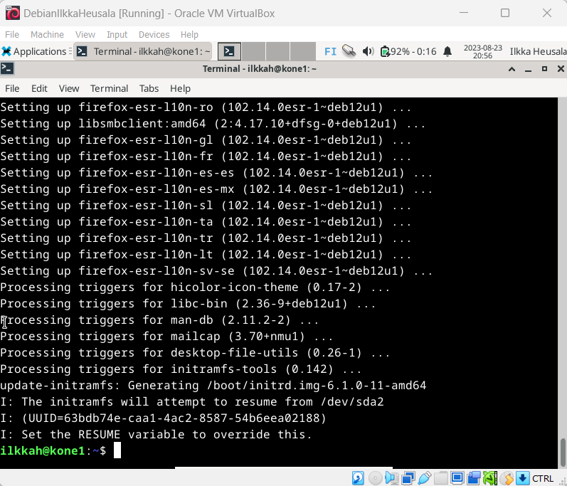$ sudo apt-get -y dist-upgrade komento päivitti kaiken ja uudelleenkäynnistystä ei tarvittu.
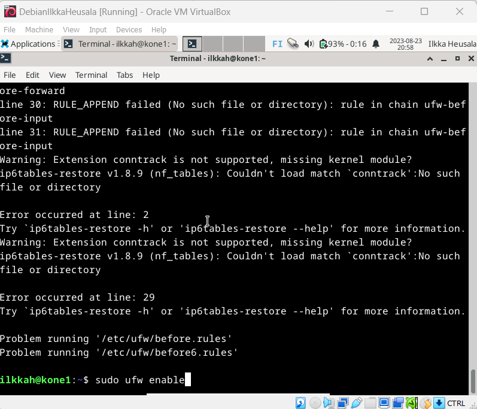
$ sudo apt-get -y install ufw asensi palomuurin, ei ongelmia.
$ sudo ufw enable komento kuitenkin antoi virheilmoituksia, palomuuri ei käynnistynyt.
Kokeilen käynnistää uudelleen koneen.
Se korjasi ongelman palomuuri oli käynnistynyt koneen bootatessa.
asensin VirtualBoxin guest additionsin, asennus tarvitsee uudelleenkäynnistyksen.
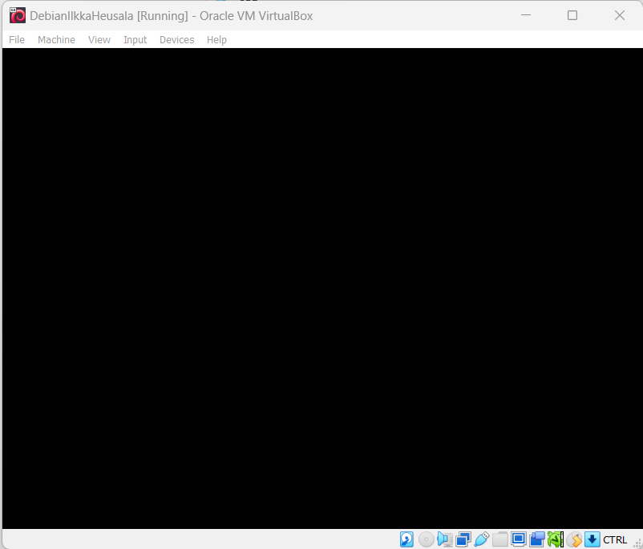Uudelleenkäynnistyksen jälkeen tulos oli tämä. Musta ruutu. Opettajalla oli ohjeet tämän korjaamiseen. Työstän tätä ongelmaa myöhemmin.
Kokeilin pakottaa vesa grafiikat päälle boottivalikosta lisämäällä komennon xforcevesa. Se ei auttanut. edelleen tuloksena oli musta ruutu.
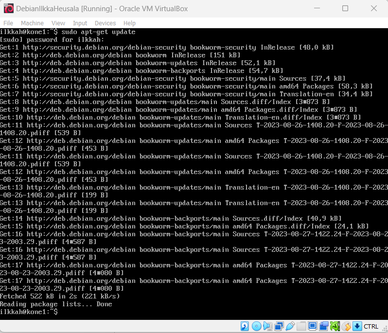
Kokeilin ohjeiden mukaisesti päivittää paketinhallinan ja koneen komentokehoitteesta.
Poistin quest additionsin, kun en saanut sitä asennettua uudelleen.
kokeilin "reboot" komentoa ja "shutdown -r" komentoa, ne eivät tomineet.
Käynnistin koneen Gui valikosta uudelleen.
Tuloksena toimiva kone, mutta ilman kivoja lisäominaisuuksia.
Asensin vielä kerran guest additionsin mutta sama tilanne, musta ruutu tulee takaisin ☹
Jos asia ei korjaannu vihje oli asentaa toinen distro, kuten Xubuntu. Tämä on harmmillista, koneessani ei toimi siis lisäherkut Host koneen ja virtuualikoneen käyttöjärjestelmään välillä. Ainakaan Debian ja VirtualBox yhdistelmässä.
Poistin uudestaan Guest additionsin ja taas toimii Gui.
Asensin Vmwareen Debianin ja teen jatkossa virtualisoinnin Vmwarella.
Olen siis siirtynyt käyttämään Vmware virtualisointi sovellusta ja siihen asennettua Debian 12 käyttöjärjestelmää. Windows 11 ympäristössä. Päivitin luento 1 läksyjen loppua hieman tämän osalta.
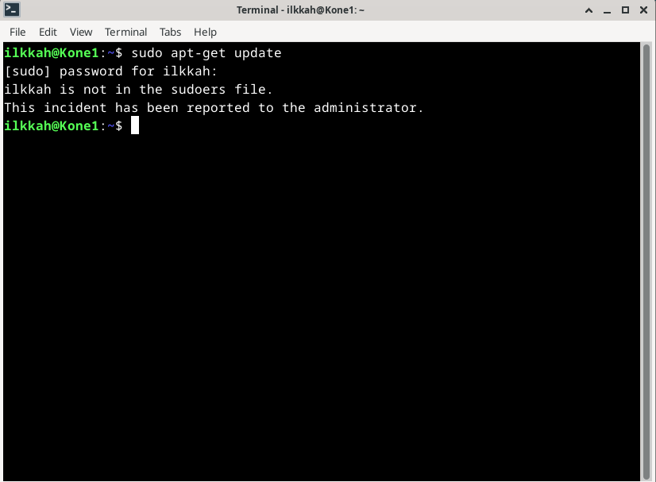Törmäsin heti ongelmaan. Asiasta ilmoitettiin järjestelmänvalvojalle 😊
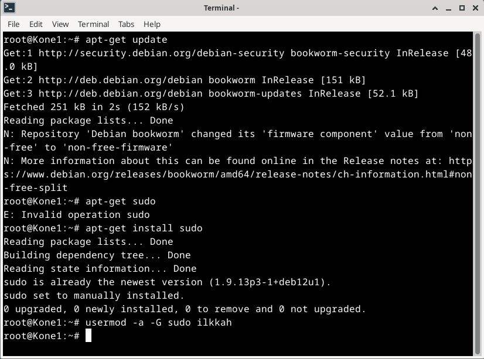Googlasin ja päädyin Debianin foorumille. löysin ohjeet ja asensin sudon, sekä lisäsin ilkkah käyttäjän sudoers tiedostoon komento: ”usermod -a -G sudo USER”, jossa USER on siis käyttäjänimesi.
Kirjauduin käyttäjällä ilkkah ja kokeilin tomiiko sudo komento päivittämällä paketinhallinan ja homma toimi.
Asensin Micron, komento “sudo apt-get install micro”, se asentui onnistuneesti.
Kokeilin listata koneen tiedot lshw:llä, mutta sitä ei ollut asennettu. Asensin lshw:n komennolla ”sudo apt-get install lshw”.
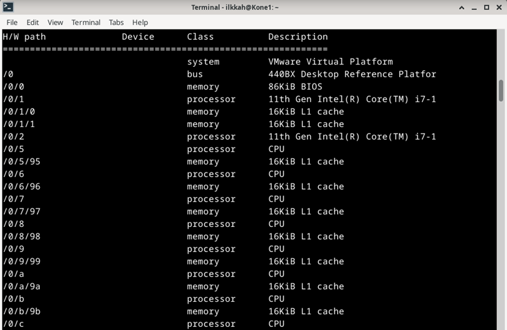Listasin raudan komennolla ”sudo lshw -short -sanitize”.
komennot ”apt-cache show git”, sain paketinhallinnan tiedot gitistä.
Itse asennus “sudo apt-get install git”.
”sudo apt-get install telnet” asentaa Telnetin koneelle, jolla voi ottaa yhteyttä internetin palvelimiin, jolloin pääsee käyttämään palvelimen tarjontaa hyväkseen.
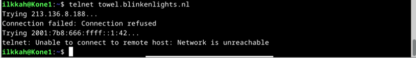”telnet towel.blinkenlights.nl” komennolla pitäisi pystyä alkaa katsomaan Star Wars elokuvaa Ascii merkeillä tehtynä, mutta palvelin oli alhaalla. Kannattaa kokeilla myöhemmin uudestaan.
“sudo apt-get install neofetch” asentaa neofetchin ja komento “neofetch” pirtää tiedot distrosta näytölle.
”sudo apt-get install wget” asentaa wget ohjeman, jolla voi ladata tiedostoja internetistä. Esim. Teamviewer sovelluksen Debianille. Alla komento sille.
”wget https://download.teamviewer.com/download/linux/teamviewer_amd64.deb”
”sudo dpkg -i teamviewer_amd64.deb” asentaa .deb asennustiedoston. Tämä oli toinen kerta, kun asennan graafisen ohjelman terminaalin kautta. En tiedä minne se asentuu ja miten se käynnistettäisiin komentokehotteesta. Gui:n puolella application finderilla löydän ohjelman ja voin käynnistää sen.
”sudo apt-get install ensimmäinen ohjelma, toinen ohjelma, kolmas ohjelma
Lähde: How to Use apt to Install Multiple Programs from the Command Line in Debian 11 (linuxhint.com)
Root, koneen tiedostojärjestelmän juuri.
Home, koti kansio
User, käyttäjän omat tiedosto kansio
komennot ”cd /”, ”cd etc”, ”ls”.
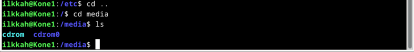Yllä kuvassa komennot ja listaus media kansion sisällöstä.
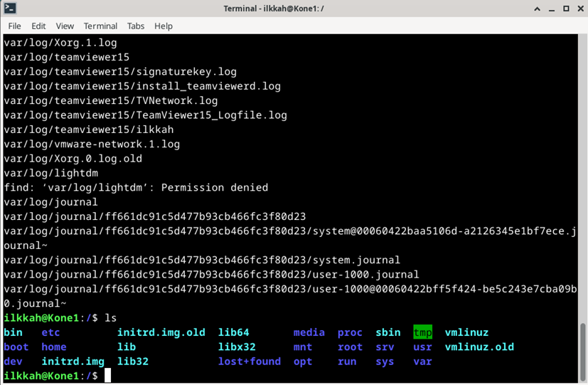komennot ”cd ..”, ”find var/log”, cd var/log/”, ”ls”.
Loin komenolla ”nano teksti” tiedoston teksti ja laitoin sisällöksi numeroita.
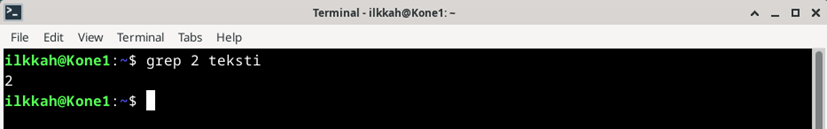Etsin ”grep 2 teksti” komennolla sisältääkö tiedosto teksti numeroa 2 ja se löytyi.
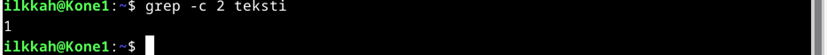”grep -c 2 teksti” laskee kuinka monta osumaa tiedostossa on numerolle 2
Tekstitiedostoni oli huono tähän tehtävään, en enää alkanut luomaan uutta. Googlasin grep komennosta lisää, alla oleva vaikutti todella hyödylliseltä:
komento ”ls /etc|less”
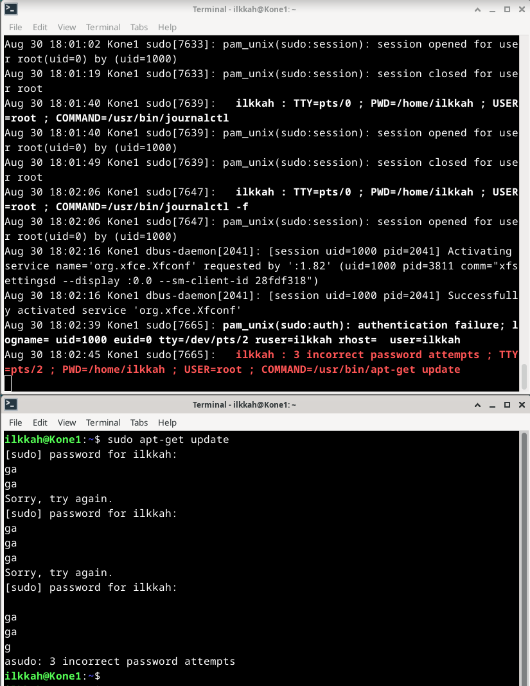Epäonnistunut kirjautuminen sudo komentoon, 3 virheellistä kirjautumisyritystä käyttäjälle ilkkah koneella Kone1, elokuun 30, kello 18.02. Sudo PID numero 7665, yrittänyt käynnistää apt-get ohjelman komennolla update.
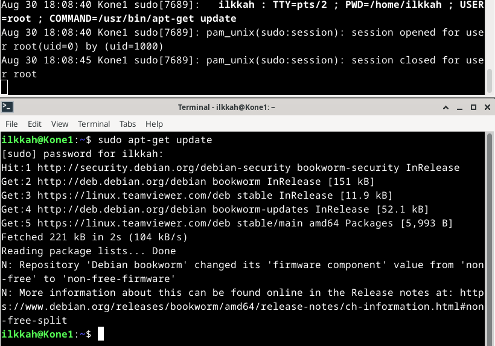Kone1 käyttäjä ilkkah käynnisti sudo komennon, prosessi (PID) 7689 toimi root oikeuksilla apt-get update komento. Tällä kertaa onnistuneesti.
alkusanat
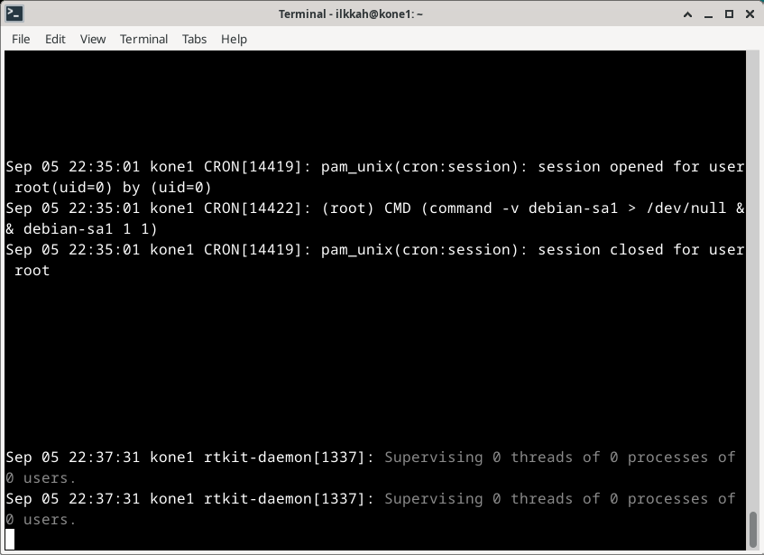
Sain aluksi tälläisen vastauksen "sudo journalctl -f komenolla" ja sen jälkeen komennolla "firefox localhost" Olin unohtanu Apachen asennuksessa pari asiaa. Koitin "systemclt restart apache2" (huomaa kirjoitusvirhe) komentoa ei löytynyt. Päätin asentaa sen komennolla "sudo apt-get install systemctl" (tällä kertaa oikein kirjoitettuna) Virheitä tuli useita. Päätin silti jatkaa ja kokeilla mitä käy. Laitoin komennon "sudo a2enmod userdir" ja käynnistin demonin uudestaan komennolla "sudo systemctl restart apache2"
Olin unohtanu Apachen asennuksessa pari asiaa. Koitin "systemclt restart apache2" (huomaa kirjoitusvirhe) komentoa ei löytynyt. Päätin asentaa sen komennolla "sudo apt-get install systemctl" (tällä kertaa oikein kirjoitettuna) Virheitä tuli useita. Päätin silti jatkaa ja kokeilla mitä käy. Laitoin komennon "sudo a2enmod userdir" ja käynnistin demonin uudestaan komennolla "sudo systemctl restart apache2"
tämän jälkeen virtuaalikone kaatui, enkä saanu sitä enää päälle. Se luultavasti johtui systemlctl:n asentamisesta mikä ei mennyt onnistuneesti. Kone ei siis enää käynnistyny graafiseen liittymään.
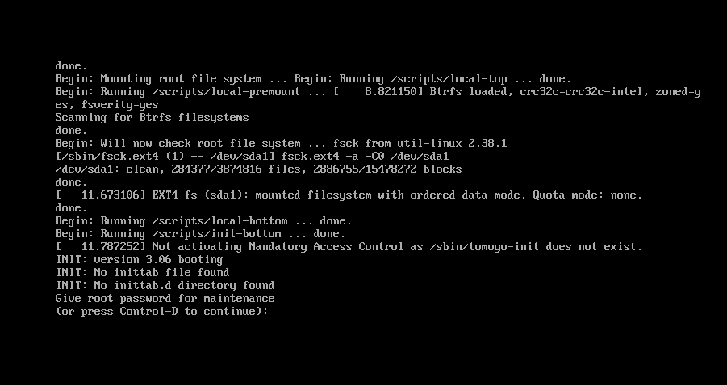 boottasin recovery moodiin, mutta en alkanut enää googlaamaan mitä olisi tehtävissä. tutkin hiemna, laiton komennon "sudo apt-get update" paketinhallinta ei ollut enää toiminnassa ja se ei pystynyt päivittymään. löysin root hakemistosta "ls" komennolla initrd.imd.old. Yritin avata sen micro editorilla. Sisältö oli ASCII merkkejä. Päätin jatkaa tehtävää toisella läppärillä, jolla olin kurssin alunkin tehnyt. En ottanut näistä kuvia siksi, että niitä olisi tullut aivan liikaa ja en saisi tät raporttia koskaan valmiiksi. Näiden tekeminen on aika työlästä.
Siiryin toiselle virtuaalikoneelle ja asensin Apachen. komento "sudo a2enmod userdir" ja koitin saada oman kotihakemistoni auki selaimella.
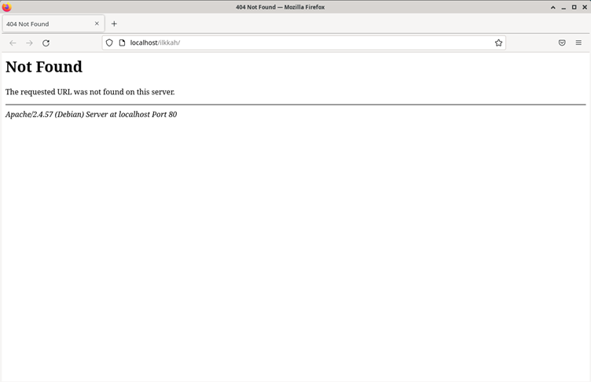Firefox antaa ilmoituksen 404 pyydettyä osoitetta ei löydy palvelimelta. Luultavasti koska index.html puuttuu
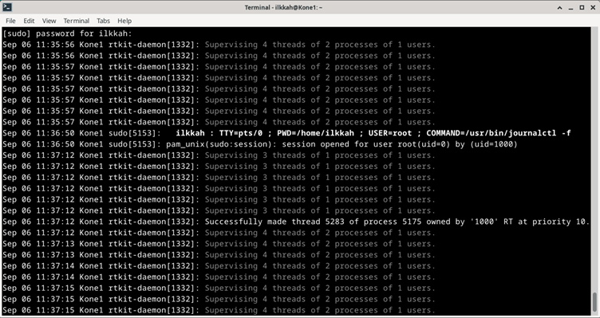Laitoin komennon ”sudo journalctl -f” avasin toisen terminaal ja sinne komento ”firefox ”http://localhost” Firefox aukesi ja Logissa näkyi rtkit-daemon(1332) prosessi valvomassa 4 lankaa kahdesta prosessista yhdellä käyttäjällä. Käyttäjä oli tämä virtuaalikone, nimeltää kone1. Googlasin hieman ja tuo prosessi on jonkinlainen palvelija prosessi. Lähde: Hukkasin lähteen (se oli jokin Linux keskustelupalsta). Demoni myös onnistuneesti loi langan 5283 prosessista 5175 jonka omisti käyttäjä ID 1000, eli käyttjä kone1 prioriteetillä 10. Tuo on luultavasti korkea prioriteetti luku.
Loin microlla index.html tiedoston sisällöllä Hello World! kansioon public_html
Laitoin komennon chmod + x index.html ja muutin tiedoston oikeudet executable (korjaus 17.09.2023 tätä ei tarvinnut tehdä tiedostolle. Se piti tehdä public_html kansiolle, sieltä puuttui oikeudet. mkdir public_html kannattaa ilmeisesti tehdä sudo komennolla, jolloin homma pelittää heti)
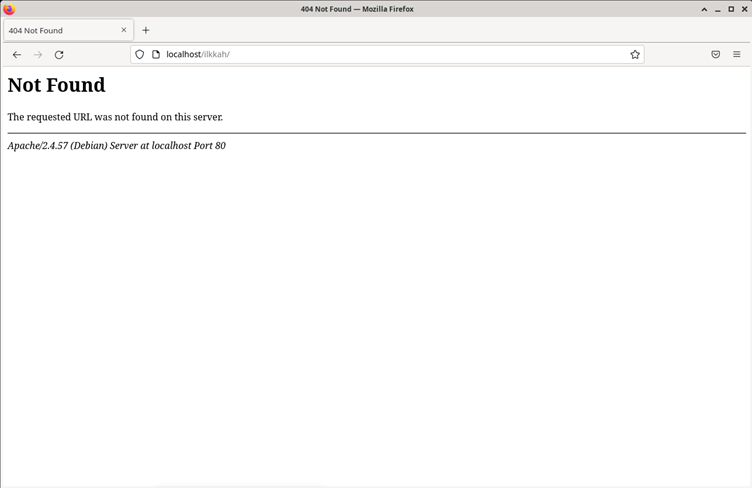Laitoin komennon ”firefox ”http://localhost/ilkkah/” Ei aukea, en keksi missä on ongelma.
Tein googlauksen ” how to change apache2 default page”
Vastaus suoraan googlen esimerkeistä: What is apache2 Ubuntu default page? The default Ubuntu document root is /var/www/html. You can make your own virtual hosts under /var/www. This is different to previous releases which provides better security out of the box. Please use the ubuntu-bug tool to report bugs in the Apache2 package with Ubuntu.
Komento terminaaliin: “cd /”, ”cd var”, ”cd www”, ”cd html”, ”ls” ja sieltä löytyi index.html kokeilin komentoa ”firefox index.html” selaimeen aukesi tuossa tiedostopolussa oleva index.html ja se näytti olevan Apachen vakio aloitussivu.
komento ”sudo cp index.html index2.html, tein siis backupin index.html tiedostosta ja nimesin sen index2.html
komento ”cd”, ”cd public_html” “ls” ja muutama väärä komento ja kopioin oikealla komennolla ”sudo cp index.html /var/www/html/” Huom. varoituksia ei anneta, tuossa kyseisessä tiedostopolussa on jo index.html ja se ylikirjoitettiin nyt.
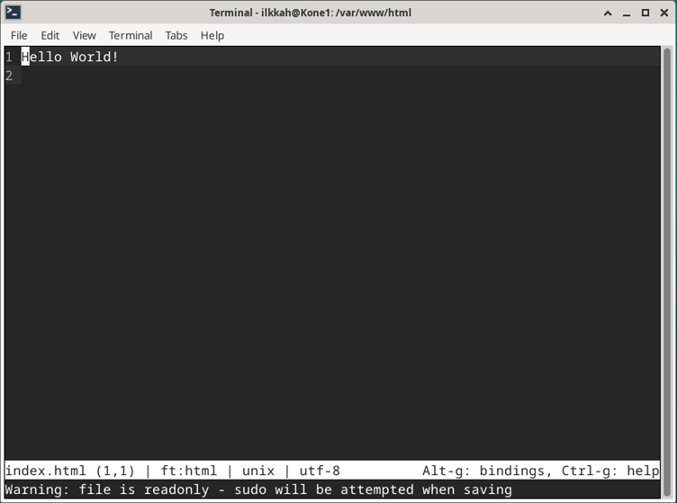menin /var/www/html/ hakemistoon ja kokeilin komennolla ”micro index.html” tiedosto on nyt korvattu luomallani index.html, joka on myös käyttäjä ilkkah kotihakemistossa public_html kansiossa, jonka pitäisi näkyä ulkomaailmaan, mutta en ole saanut sitä vielä toimimaan. Tässä jäi mietityttämään mikä tuo var kansio on variables?
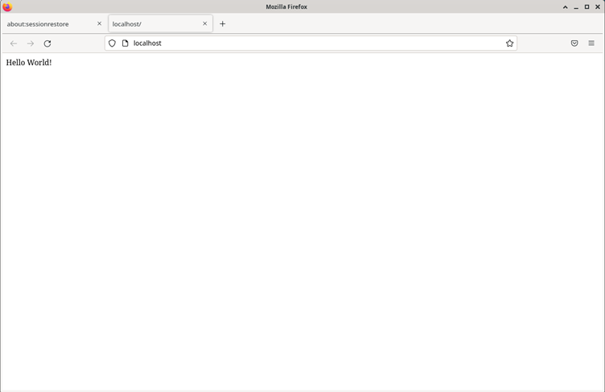Komento ” firefox ”http://localhost” ” varmisti, että apache palvelin pyörittää nyt tuota sivua.
kohta c) sivuaa tätä. En saa ilkkah käyttäjän public_html kansiota näkymään ulkomaailmaan.
Loin tämän html tiedoston host koneella Vscodella
Sammutin virtuaalikoneen ja koitin asentaa VMWare tools lisäohjelman, mutta se olikin jo asennettuna. Käynnistin koneen uudestaan. Tuo ohjelma mahdollistaa kopioinnin käyttäen graafista käyttöliittymää host koneen ja virtuaalikoneen välillä.
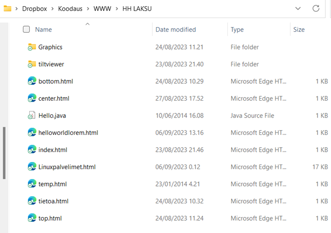Kuvakaappaus host koneen tiedostoista. Tästä kopion tiedoston virtuaalikoneeseen (kuva alla)
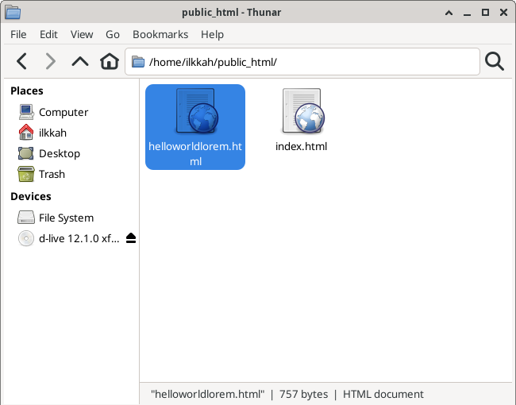Tiedosto helloworldlorem.html kopioitiin onnistuneesti.
Komento curl kuvan mukaisesti -l lisätiedolla. Se tulostaa terminaalin kyseisen .html tiedoston sisällön. Huomio, en huomannut mitään eroa laittaako tuota -l mukaan komentoon, komento tulosti saman sisällön kummallakin kerralla.
Olen tehnyt tämän joskus aikaisemmin ja liittänyt haaga-helian sähköpostin Gihubiin oman sähköpostini rinnalle.
Komentoja:
”ssh root@xxx.xxx.xxx.xxx” (IP-osoite) shh yhteys palvelimeenvalitsin Digital Ocenin palveluntarjoajaksi. Shared cpu 1gb ram 25GB ssd, hinta 6 dollaria/kk valitsin vielä ilmaiset telemetria tiedot palvelimesta graafiseen käyttöliittymään ja varoitus viestit. Onkohan tällä teho vaikutuksia palvelimeen? Eli kannattaako näitä ottaa?
Etenin näillä komennoilla:
”ssh root@46.101.117.13” yhteys palvelimeenTestaus, että ilkkah on lisätty sudo tiedostoon ja voi toimia pääkäyttäjänoikeuksin.
Lukitsin root käyttäjän ja kävin vielä uudestaan katsomassa config tiedoissa, että Permitrootlogin on varmasti ”no”
Asensin Apachen komennolla ”sudo apt-get install apache2”, sitten komento ”sudo ufw allow 80/tcp” palomuuriin reikä weppipalvelimelle. Loin index.html tiedoston sisällöllä Hello World! /var/www/html/ kansioon ja kävin katsomassa, että sivut aukeavat, niin host koneella, kuin kännykällä.
Löin komennon ”sudo journalctl -n 2000” ja lokista löytyy useita epäonnistuneita kirjautumisyrityksiä ties keneltä.
24.09.2023
”sudoedit /etc/apache2/sites-available/ilkkah.conf”
## /etc/apache2/sites-enabled/ilkkah.conf
DocumentRoot /home/ilkkah/public_html/
Require all granted
”sudo a2ensite ilkkah.conf”
”sudo a2dissite 000-default.conf”
"sudo tail -1 /var/log/apache2/error.log"
virtual hosts
"sudoedit /etc/apache2/sites-available/pyora.example.com.conf"
"cat /etc/apache2/sites-available/pyora.example.com.conf"
komentoja:
"sudo a2ensite pyora.example.com"
"sudo systemctl restart apache2"
"mkdir -p /home/xubuntu/publicsites/pyora.example.com/"
curl localhost
VirtualHost *:80
# This first-listed virtual host is also the default for *:80
ServerName www.example.com
ServerAlias example.com
DocumentRoot "/www/domain"
/VirtualHost
VirtualHost *:80
ServerName other.example.com
DocumentRoot "/www/otherdomain"
/VirtualHost
ostin domainin harkkatehtava.pro namecheapilta ja muutin dns palvelimen tiedot osoittamaan oman virtuaalipalvelimen ip osoitteeseen.
Kokeilin viiden minuutin päästä osoitetta harkkatehtava.pro ja se ohjasi minun palvelimelleni.
host harkkatehtava.pro antaa tällaista tietoa, viittaako vielä siihen, että osoite on rekisteröinti vaiheessa vai valintaan namecheapissä, että minun tietoa ei anneta. Ainakin sen pitäisi vaikutta whois tietokantaan.
harkkatehtava.pro osoittaaa palvelimeni ip osoitteeseen. Haku kesti 16ms, haku tapahtui lauantaina kello 15:17 Suomen aikaa, eli palvelin on GMT 00.00
Tein ilkkah.conf tiedoston /etc/apache/sites-available/ kansioon ja loin public_html hakemiston sudo oikeuksilla home kansioon ja sen alle index.html tiedoston, jossa sisältö ”Hello World! kayttajan alla” ajoin komennon sudo a2ensite ilkkah.conf, käynnistin apachen uudestaan ja kokeilin Curlilla oliko sisältö muuttunut. Näin ei ollut käynyt. uskoisin, että vika on .conf tiedostossa tai sen aktivoinnissa.
Olin unohtanut yhden komennon sudo ”a2dissite 000-default.conf” joka disabloi vakio nettisivun ja luullakseni aktivoi virtuaalihostin. Käynnistin apachen uudestaan ja kokeilin curlilla harkkatehtava.pro osoitetta. Nyt tuli 403 Forbidden. uskoisin, että tässä on nyt kyse usergroupista ja oikeuksista tuohon home kansion alla olevaan public_html kansioon ja index.html tiedostoon.
Poistin public_html kansion ja loin sen ilman sudo komentoa uudestaan, koska sudon kanssa sille oli tullut käyttöoikeudet rootille. kokeilin uudestaan, mutta homma ei toiminut. Edelleen 403 forbidden.
Katsoin apachen error login ja jonkin näköiset oikeudet puuttuvat, että kansion saisi auki. Googlasin ja ”sudo chmod 755 public_html” pitäisi antaa pääsyn public_html kansionn. Mutta sekään ei auttanut. Kokeilin vielä chmod komennolla erilaisia variaatioita public_html kansioon, mutta en saanut hommaa toimimaan. Minulla oli tämä sama ongelma localhostissa virtuaalikoneella aikaisemmalla luennolla, silloin sivun sai näkymään, kun tero opasti hieman tai olisi luonut sudo komennolla public_html kansion. Tässä se ei kuitenkaan toiminut. "ls -l" komennolla tutkin kansion oikeuksia, mutta en keksinyt miten saisin homman toimimaan.
26.09.2023
Poistin taas kansion ja kokeilin vielä luoda kansion "mkdir -p public_html" mutta ei auttanut asiaan, edelleen tulee 403 forbidden. Tero karvisen materiaaleistam, en löytänyt vastaavaa virhe tilannetta, koska mielestäni olen tehnyt kaiken mitä ohjeet neuvovat. En kyllä täysin ymmärrä "chmod" komentoa ja miten oikeuksia pitäisi tulkita tuossa "ls -l" komennolla lukiessa. Myöskin "man chmod" manuaalista ei ollut apua, tai sitten olin liian hätäinen sen kanssa. Pitäisi perehtyä manuaaleihin paremmin.
Sain homman toimimaan komento "chmod ugo+x ilkkah" kansiolle
02.10.2023
Etenin Tero Karvisen tehtävän ohjeiden mukaan ja runserver esimerkkisivu on näkyvissä. Ongelmia ei tullut vastaan.
Etenin komennoilla
- ”python manage.py migrate”
- ”python manage.py createsuperuser” asetin käyttäjänimen, sähköpostin ja salasanan, käytin vahvaa salasana.
Kokeilin vielä tässä vaiheessa Teron komennot:
- ”sudo apt-get install pwgen”
- “pwgen -s 20 1” joka loi satunnais salasanan. En käyttänyt tätä.
Sitten aloin luomaan asiakastietokantaa
”micro testi/settings.py”
lisäsin ’crm’ asennettuihin ohjelmiin
- ”micro crm/models.py”
Lisäsin koodi pätkän: ” class Customer(models.Model):
name = models.CharField(max_length=300)”
- “ ./manage.py makemigrations”
- “./manage.py migrate”
- “micro crm/admin.py”
lisäsin koodi pätkän: “from . import models
admin.site.register(models.Customer)”
käynnistin djangon serverin komennolla “./manage.py runserver
RM ja sen alle customer tietokanta oli luotu.
komennot ”deactivate” virtualiympäristön sulkeminen
- ” echo Hello World! sudo tee /var/www/html/index.html”
- “firefox localhost” ja sivu oli päivittynyt
home kansiossa: komento “mkdir -p publicwsgi/production/static/”
- “echo “statically see you at localhost” tee|publicwsgi/production/static/index.html
- “sudoedit /etc/apache2/sites-available/production.conf”
Tallensin kuvan sisällön tiedostoon
“sudo a2ensite production.conf”
“sudo a2dissite 000-default.conf”
“/sbin/apachectl configtest” Tuli errori ja aloin selvittämään. kirjoitan seuraavan kohdan ulkomuistista
katsoin errologin ”sudo tail /var/log/apache2/error.log”
siellä oli maininta caught SIGWINCH virhe. apache shutdown gracefully
komento “sudo2dissite production.conf”
“sudo systemctl restart apache2”
“firefox localhost” toimii taas
“/sbin/apachectl configtest” Syntax Ok
kävin katsomassa production.conf tiedostoa, kaikki oli kunnossa.
päätin kokeilla uudestaan komentoa ”sudo a2ensite production.conf”
”sudo systemctl restart apache”
”sbin/apachectl configtest” Syntax Ok, eli en tiedä missä vika oli tullut, mutta tämä auttoi.
”firefox localhost/static/” 403 Forbidden.
”ls -l” home kansiossa. execute oikeudet puuttuivat ilkkah kansiolta.
”chmod ugo+x ilkkah”
”firefox localhost/static/”
Toimii
Seuraavaksi tein tehtävän ja en kirjoittanut raporttia samalla, kiireen takia, joten kirjoitan tämän ulkomuistista. Sain homman kuitenkin toimimaan. Jäi mietityttämään, että ohjeet eivät olleet suoraan sopivat tähän tehtävään ja olisiko voinut jättää tuon ylemmän osuuden tekemättä osittain tuon staattisuuden tarkastuksen kohdalta?
Asensin virtuaaliympäristön, komento ”virtualenv -p python3 –system-site-packages env”
ollessani publicwsgi/ kansiossa. Tämä meni oikeessa kansiossa, mutta jossain välissä tulin luoneeksi yhden ylimääräisen kansion, joka aiheutti .conf tiedoston kanssa hieman säätämistä.
aktivoin virtuaaliympäristön komennolla ”source env/bin/activate”, sitten tarkastin onko pip virtuaalisessa ympäristössä komennolla ”which pip” se oli.
seuraavaksi editoin ”requirements.txt” tiedoston, lisäämällä sinne sanan ”django”
seuraavaksi tarkastus mikä versio djangosta oli asentunut komennolla ”django-admin –version”
4.2.5 eli yli neljän, homma onnistui.
seuraavaksi aloitin uuden projektin komennolla ”django-admin startproject production”
sitten kytkin Pythonin Apacheen, editoin production.conf tiedostoa apachen sites-available kansiosta ja lisäsin Teron kansioiden määritys muuttujat ja skriptin tiedostoon. Tässä vaiheessa kansiot menivät vielä väärin.
Sitten komento ”sudo apt-get -y install libapache2-mod-wsgi-py3” ja tarkastin syntaxin komennolla ”/sbin/apache2ctl configtest” tuli ilmoitus syntax ok
Käynnistin Apachen uudestaan komennolla ”sudo systemctl restart apache2”
ja katsoin toimiko tuotanto ympäristö komennolla ”curl -s localhost|grep title”
vastaus oli 404 not found
Aloin selvittämään asiaa production.conf tiedostosta ja kävin läpi ls -l komennolla kaikki asianomaiset kansiot home kansiossa koneellani. Oikeudet kansioissa olivat kunnossa, mutta tässä vaiheessa huomasin, että kansioita oli tullut liikaa. Eli hakemisto puu ei vastannut production.conf tiedostossa olevia määrityksiä ja Pythoninkin versio oli 3.11, eikä 3.9.
Muutin production.conf tiedoston polut vastamaan kansiorakennetta virtuaalikoneella ja pythonin kansion oikeaksi. Näin jälkikäteen, kun tarkastelin harkkatehtävän ohjetta, voi ongelman ohittaa jo teko vaiheessa toimimalla eri tavalla, kun kopioi osoitteita. Mutta tein oman totutun käytännön mukaan 😊 Ei mennyt ihan oppikirjan mukaisesti.
Kokeilin uudestaan komento ”curl -s localhost|grep title”
edeleen 404 not found. Unohdin käynnistää Apachen uudestaan, komento ”sudo systemctl restart apache2”
”curl -s localhost|grep title” ja komento “curl SI localhost|grep Server”
Tuotantoympäristö oli asennettu ja se toimi Apache palvelimella.
07.10.2023
Kaikki erillisissä tiedostoissa ja ajettuina kuvassa
“sudo apt-get -y install golang-go”
“micro helloilkka.go”
koodin kopiointi Terolta ja muokkaus vastaamaan omia tarpeita.
Koodin kääntäminen go:lla ja ajo, tulostaa Hello Ilkka
Esittelykuva, hieman laskuja.
micro helloilkka.sh sisällöllä echo ”Hello Ilkka”
”sudo apt-get update”
”sudo apt-get upgrade”
”sudo apt-get install bash-completion”
“sudo apt-get install ufw”
“sudo apt-get ufw enable”
“sudo ufw status”
“sudo adduser maija”
“sudo adduser jormama”
“sudo deluser jormama”
“sudo useradd -G RegularUser jormama”
“sudo groupadd RegularUser”
“sudo useradd -G RegularUser jormama”
“sudo useradd -G RegularUser pekkahu”
“sudo useradd -G RegularUser ronaldosm”
“sudo useradd -G RegularUser hakanpe”
“sudo useradd -G RegularUser einarimi”
“sudo useradd -G RegularUser einariva”
“sudo useradd -G RegularUser eijava”
“sudo apt-get install apache2” tässä kohtaa katsoin vanhasta youtube videosta miten voisin edetä. Video oli puuttellinen tai liian vanha, jotta olisin saanut sen mukaan edettyä Lähde: https://www.youtube.com/watch?v=KCwnCoJWe48&t=10s
“sudo apt-get install php” tulee versio 8.2
“sudo apt-get install composer”
“sudo chown -R ilkkah:ilkkah /var/www/html” en laittanut tätä komentoa koska minulla oli oikeudet kansioon (tämä pitää varmaan tehdä muille käyttäjille, jotta he pääsevät avaamaan tuon kansion) en nyt rupenut sitä tässä tekemään.
poistin var/www/html kansiosta index.html tiedoston.
Loin phpinfo.ph tiedoston yllä olevalla sisällöllä
”firefox localhost” ja sieltä avaa phpinfo.php tiedoston hiirelllä
Tulostuu asennetusta PHP:stä tietoja
Lisäsin Apache2.conf tiedostoon User ilkkah ja Group ilkkah (tähän varmaan pitäisi lisätä myös Pekka Hurme, pekkahu käyttäjä)
”sudo apt-get install mysql-server” ei toimi googlaus netistä, pitää lisätä polku paketinhallintaan. En saanut tätä tehtyä, oikean.deb paketin lisääminen ei onnistunut siirryin eteenpäin.
wowstats.sh loin microlla wowstats.sh yllä olevan kuvan sisällöllä
”sudo apt-get install neofetch”
“sudo cp wowstats.sh /usr/local/bin”
“sudo chmod ugo+rx /usr/local/bin/wowstats.sh”
“wowstats.sh”
Loin index.php /var/www/html/ kansioon yllä olevalla sisällöllä. Lähde: https://www.php.net/manual/en/function.get-current-user.php
“firefox localhost” näyttää kayttajtunnuksen joka suorittaa php scriptiä
Ei nyt mene ihan, kuin harkassa, mutta minulla ei ole kokemusta php:stä. Myöskin tuossa käyttäjien luonnissa kaikille ei syntynyt kotikansioita ja en perehtynyt sen enempää siihen. Käyttäjät olivat kuitenkin luotu.
Tehty